写真で入力
カメラまで、ひと押し
残したい一節だけを囲むことも、何も選ばずにページ全体を読むこともできます。読み取りに自信がない時は理由を示し、「高精度でもう一度」「範囲を選び直す」「撮り直す」「この結果を編集する」から選べます。読み取った結果を捨てることはありません。
読書メモアプリ（iPhone・iPad）
「書き留める」を押すと、すぐにカメラが開きます。ページを撮って、残したいところを選ぶだけ。文字の読み取りは iPhone の中で完結し、撮った写真も、読み取った文字も、外には送りません。
App Store で見る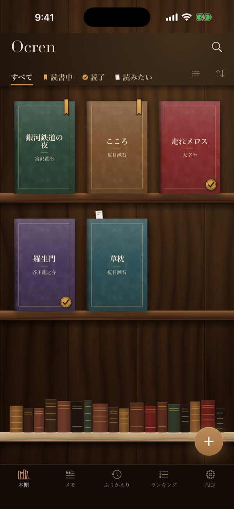
こんな人に
本に線を引いたり、付箋を貼ったり、ページの角を折ったり。あとでその一文を思い出しても、どの本だったかが分からない。Ocren は一節を、本とページ番号といっしょに文字で残すので、検索して読み返せて、どの本の言葉かもすぐに分かります。
使い方
手で打ち直す手間はいりません。日本語の縦書き・横書きと、英語の横書きに対応し、ページ番号も写真から読み取ります。
本の画面で「書き留める」を押すと、すぐにカメラ。写真ライブラリの写真（電子書籍のスクリーンショットなど）や、手入力も選べます。
残したいところを指でなぞって囲み、「読み取る」。読み取りは端末の中で行うので、機内モードでも使えます。
読み取った文字は勝手に書き換えず、そのまま残します。直すかどうかはあなた次第。ノート・ページ・7 色のフラグを添えて保存します。
写真で入力
残したい一節だけを囲むことも、何も選ばずにページ全体を読むこともできます。読み取りに自信がない時は理由を示し、「高精度でもう一度」「範囲を選び直す」「撮り直す」「この結果を編集する」から選べます。読み取った結果を捨てることはありません。
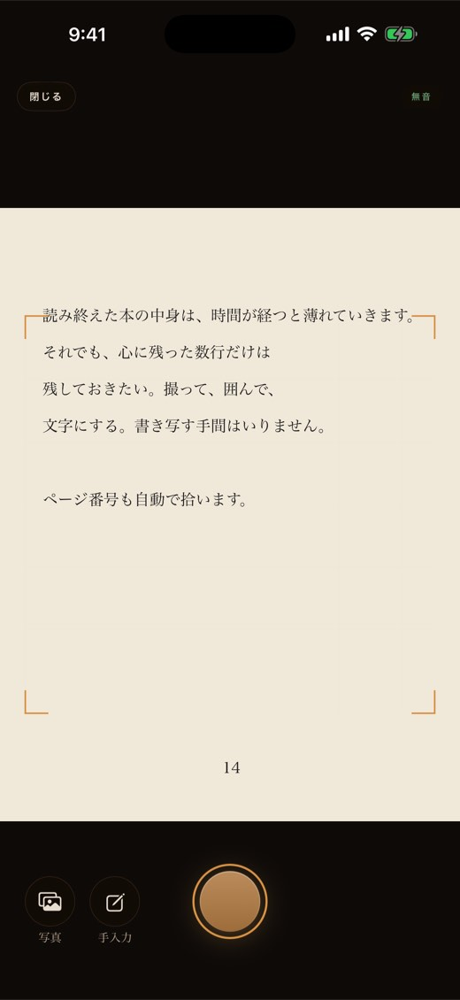
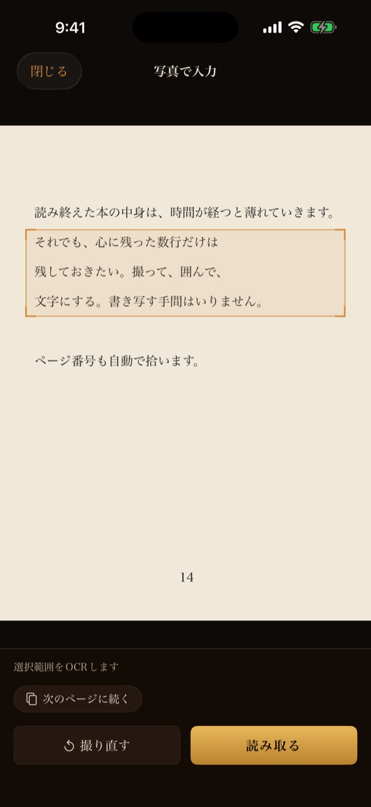
2.2 の新機能
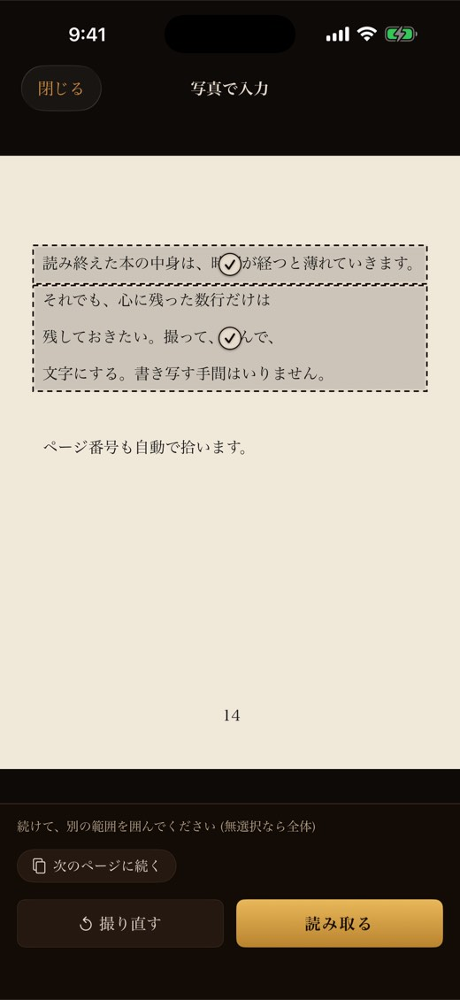
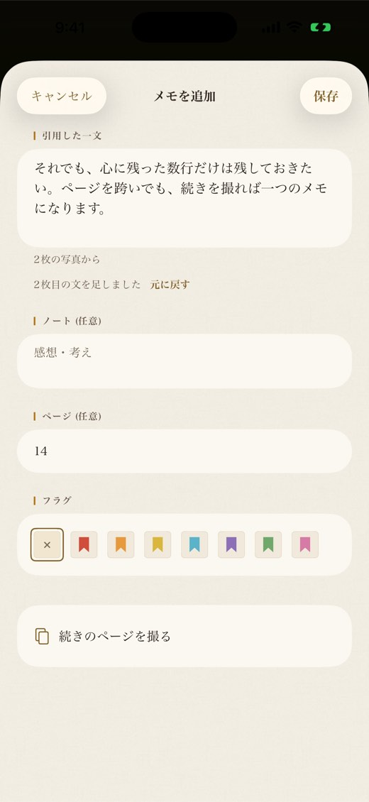
本棚
表紙が木の棚に並び、表紙の印で読書の状態がひと目でわかります。形が違うので、色だけに頼らずに見分けられます。
本は ISBN バーコード、タイトル・著者名の検索、手入力で登録できます。表紙の画像がない本は、書名を刷った布の表紙になります。番号付きの一覧（レコード表示）にも切り替えられます。
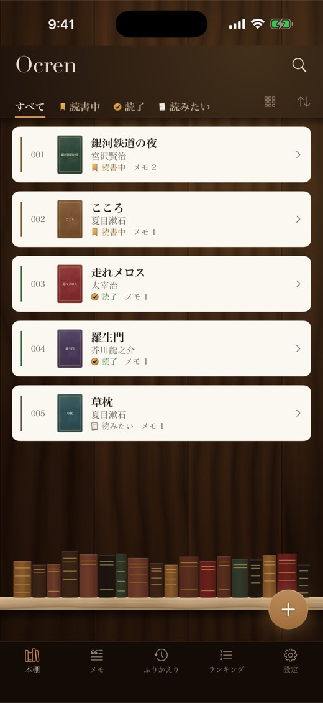
メモ・ノート・フラグ
メモには、感想を書くノート、ページ番号、7 色のフラグを添えられます。フラグの名前（重要・あとで・気づき・引用・疑問・共感・お気に入り）は自由に変えられます。
本の画面では、その本の中を検索したり、フラグで絞り込んだり。「メモ」タブには全部の本のメモが集まり、本文・ノート・書名から探して、「新しい順」「本ごと」で並べ替えられます。
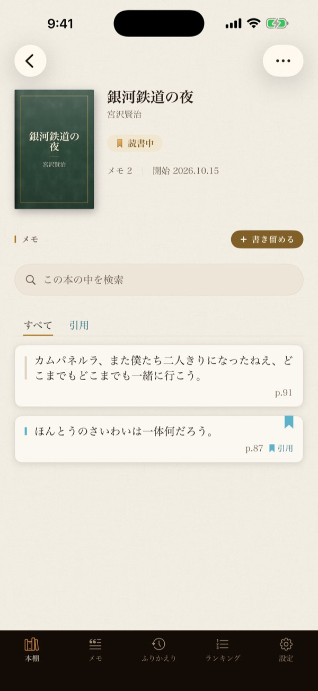
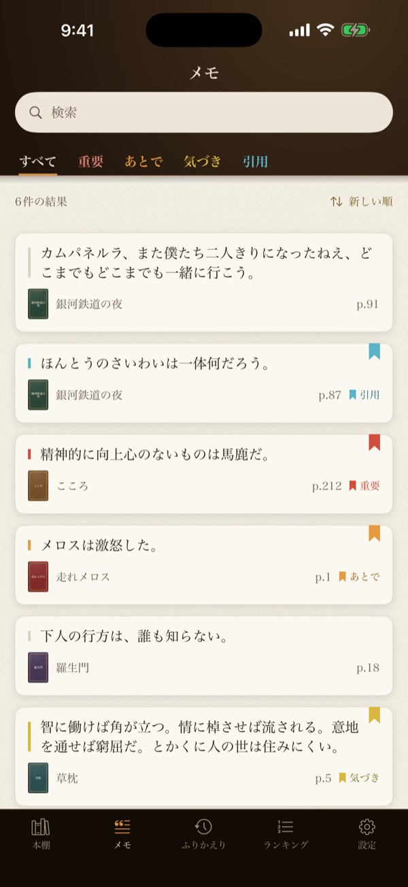
ふりかえり
「今日の一文」が、残したメモからランダムに 1 つを選びます。「別の一文」で引き直しも。毎日決まった時刻に一文を届けるリマインドも設定できます。
「読書の記録」では、読了した本・メモ・読み始めた本の数を、累計・今年・今月・今週で。メモの推移はグラフで見られます。
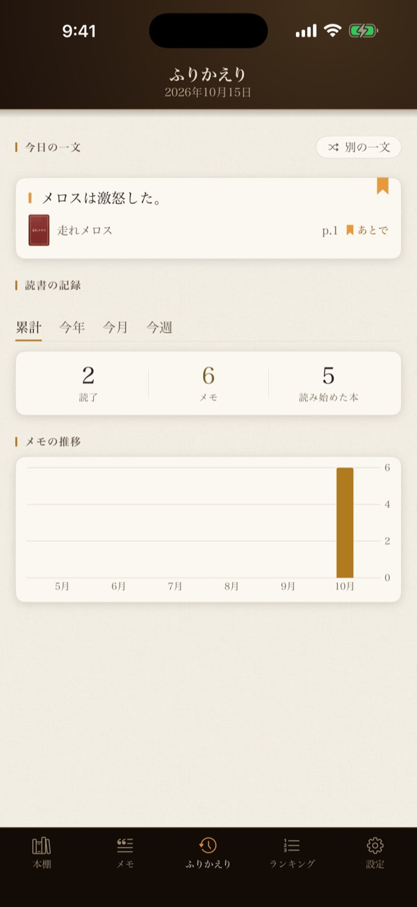
ランキング
利用者の本棚とメモから集計した 4 つのランキング：人気・メモ・今月の読了・読みたい。
表示するのは書名・著者・表紙と数だけです。誰が登録したかや、メモの本文は表示しません。
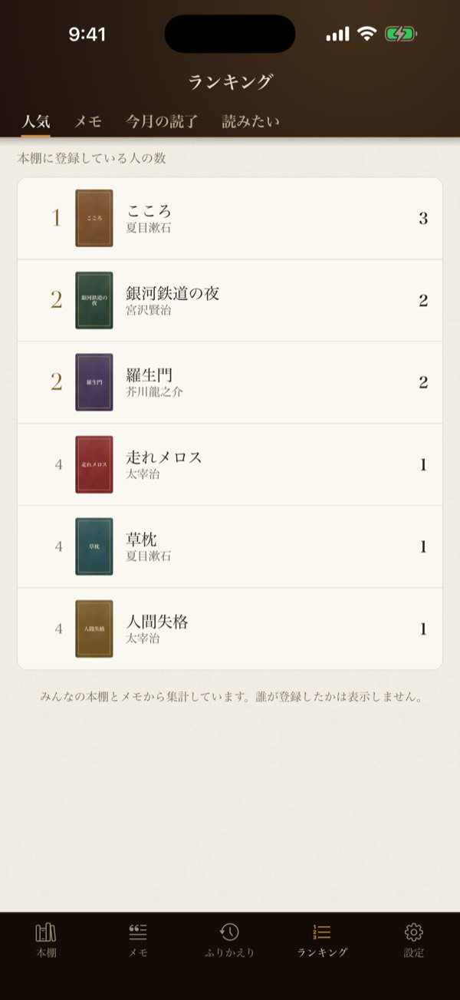
引用カード
メモの画面の「共有」から、本文と書名・著者を載せた引用カードを作れます。背景は紙・木、または自分の写真や動画。黒か白の「もや」を掛け、書体・文字の色・大きさ・位置も選べます。
画像のほか、リールやストーリーズ向けの動画（動画の最初の 15 秒、または写真がゆっくり寄る 10 秒）でも共有できます。ノートとページ番号は載らず、選んだ写真や動画は iPhone の外に出ません。
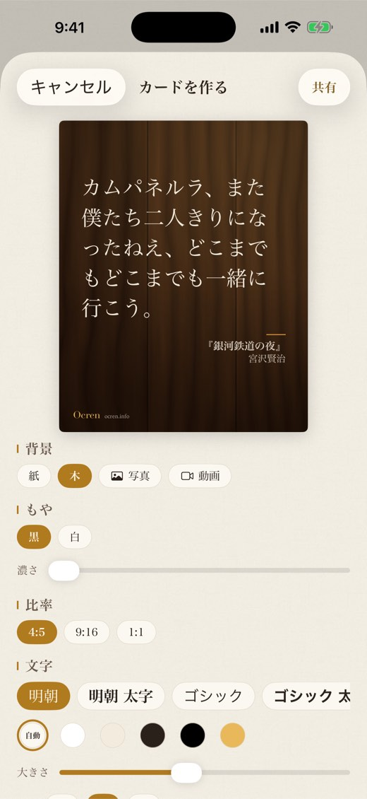
端末の中で
文字の読み取りは、すべて iPhone・iPad の中で行います。撮った写真も、読み取った文字も、外部のサーバーには送りません。写真は保存しません。
通信のない場所でも、機内モードでも読み取れます。
保存したメモは、機種変更しても引き継げるようアカウントに保存されます。詳しくはプライバシーポリシーをご覧ください。
ほかにも
Apple または Google でサインイン。本とメモはアカウントに保存され、新しい端末でも同じ本棚が開きます。
撮影・読み取り・メモの保存と検索は、通信なしで使えます。変更は、通信が戻ると自動で同期します。
iOS 17 以上の iPhone と、iPadOS 17 以上の iPad で使えます。表示は日本語と English、外観はライトとダークに対応。
料金
アプリ本体
無料
すべての機能を使えます（広告あり）
広告を削除（月額）
¥100 / 月
いつでも解約できます
広告を削除（年額）
¥1,000 / 年
月額より 2 か月分お得
「広告を削除」を購入すると、バナーと全画面の広告がすべて消えます。価格は日本の App Store での税込価格です。購読は、現在の期間が終わる 24 時間以上前に解約しない限り自動で更新されます。解約は App Store の設定からいつでもできます。
よくある質問
iPhone・iPad の読書メモアプリです。本のページを撮って残したい行を囲むと、文字にして、本とページ番号といっしょにメモとして保存します。文字の読み取りは端末の中だけで行います。
Ocren では、メモはすべて本とページ番号といっしょに保存されるので、どの本の言葉かがすぐに分かります。「メモ」タブには全部の本のメモが集まり、本文・ノート・書名から探せます。
はい。日本語の縦書き・横書きと、英語の横書きに対応しています。ページ番号も写真から読み取ります。
いいえ。文字の読み取りは iPhone・iPad の中だけで行い、写真は保存しません。保存したメモは、機種変更しても引き継げるようアカウントに保存されます。
はい。電子書籍のページのスクリーンショットを撮り、カメラの画面の「写真」から選んでください。
はい。メモの画面の「共有」から、紙・木、または自分の写真や動画を背景にした引用カードを作れます。画像のほか、リールやストーリーズ向けの動画（動画の最初の 15 秒、または写真がゆっくり寄る 10 秒）でも共有できます。
はい。すべての機能を無料で使えます（広告あり）。広告を消すサブスクリプション「広告を削除」（月額 ¥100・年額 ¥1,000）もあります。
はい。Apple か Google でサインインします。本とメモはアカウントに保存され、機種変更しても新しい iPhone や iPad で開けます。
iOS 17 以上の iPhone と、iPadOS 17 以上の iPad です。アプリの表示は日本語と英語です。
すべての画面を、写真つきで順番に説明しています。
サポート
不具合のご報告や、ご質問・機能のご要望はメールでお寄せください。アプリでは 設定 ▸ 情報 ▸ お問い合わせ から送れます。
ocren-support@yensense.com